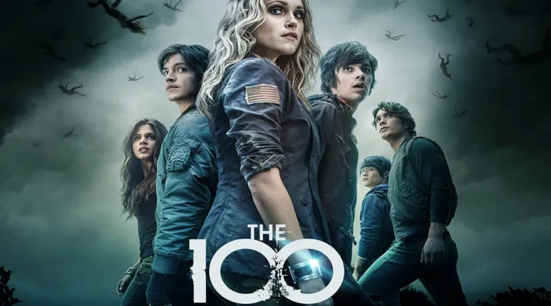
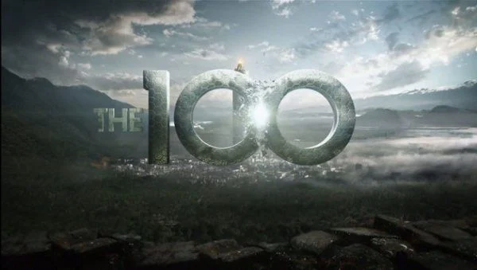
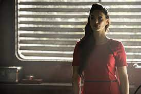
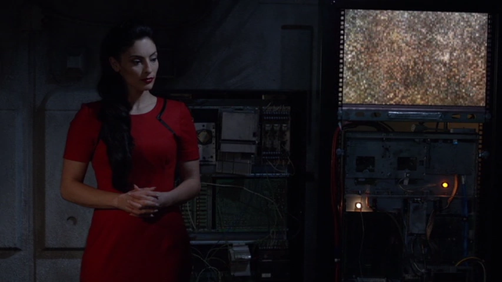

The 100 - Resumo da obra
A série conta a história de 100 delinquentes juvenis que foram enviados para a Terra para ver se ela é habitável, depois de 97 anos que um apocalipse nuclear executado por comandos de uma IA destruiu a civilização humana. Ao chegarem na superfície, eles se deparam com um ambiente hostil e percebem que não estão sozinhos.


Clique aqui para assistir o trailer
Um pouco sobre a IA e sua criadora
A.L.I.E. é uma inteligência artificial criada pela cientista Becca Franko com a assistência de Chris. O comando principal de A.L.I.E. era fazer a vida melhor para humanidade. Isso a fazia enxergar que tudo o que ela fazia era melhor para as pessoas, mesmo que as vezes não fosse.Seu avatar holográfico foi inspirado em sua criadora, Becca Franko. Ela foi responsável pelo Apocalipse Nuclear


Conheça mais sobre Becca Franko e sua criação A.L.I.E